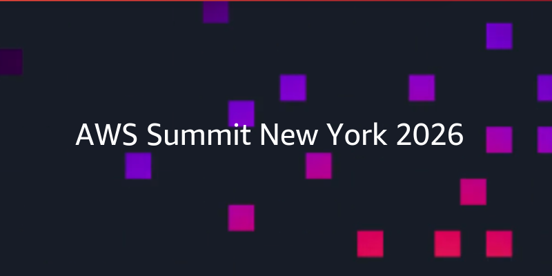
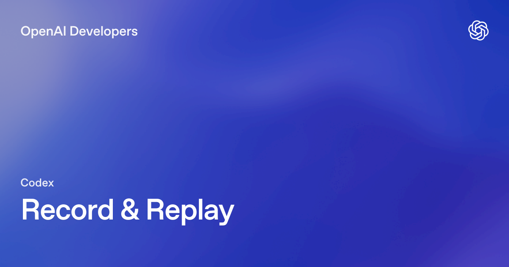
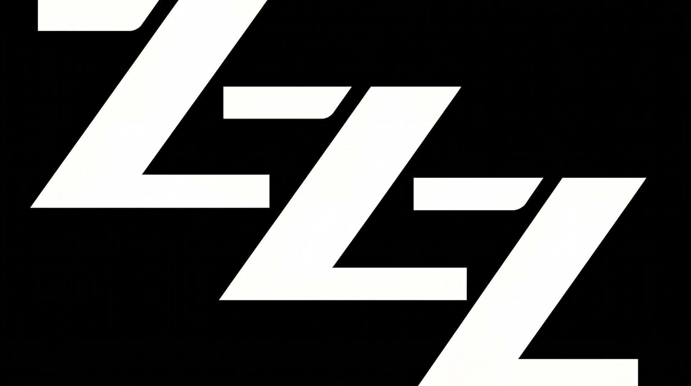
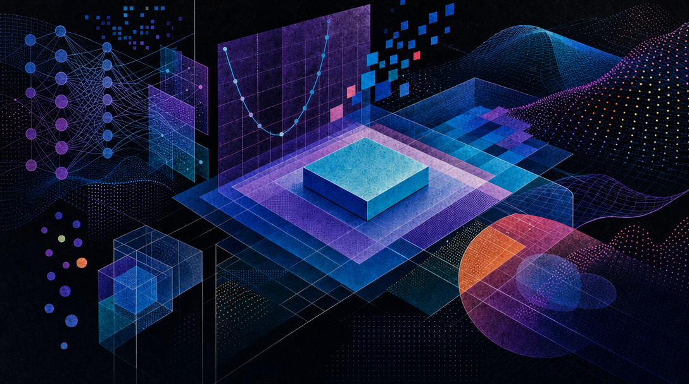
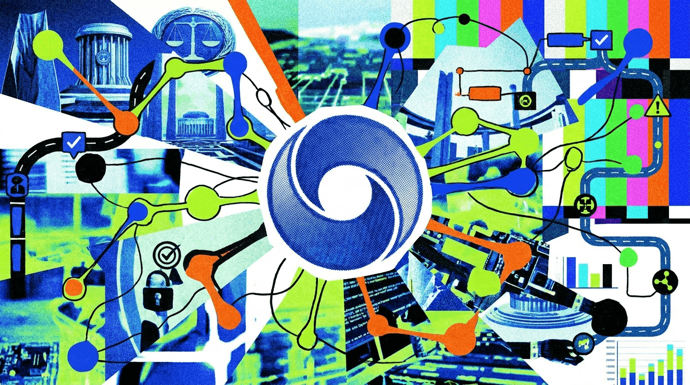
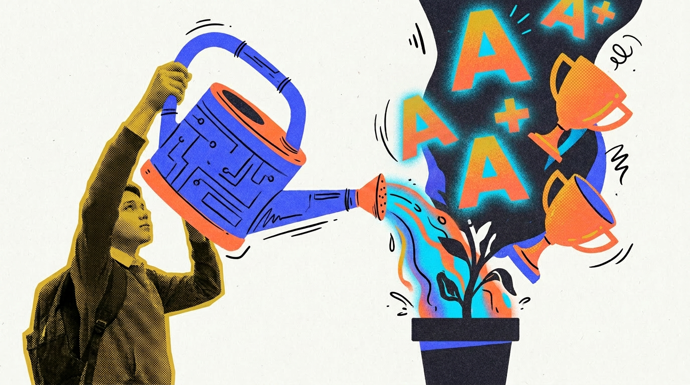
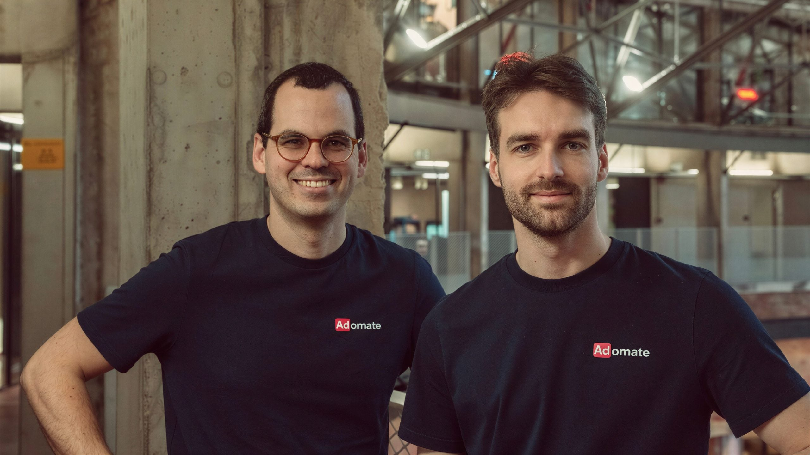
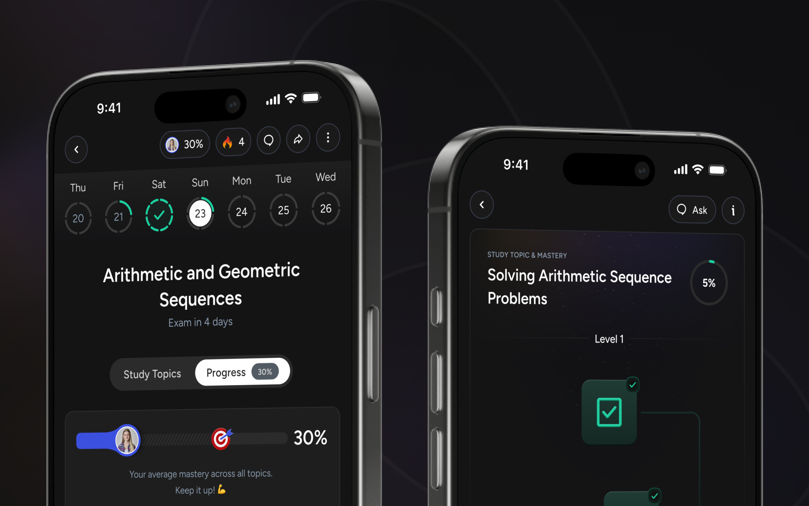

Janet 快车箱
AI Daily Briefing
2026-06-22
VOL 265
对中国创作者和企业，最实际的信号是别再把 agent 当“更会聊天的外包”。录屏复用、知识图谱、自动测代码、费用按量走，都会改变工作流报价；但每一个省下的人力，都要换成权限设计、日志留痕、人工审批和失败预案。
接下来 2-4 周盯三件事：AWS Continuum/Context 这类生产 agent 是否真的进入客户试点，OpenAI Codex Record & Replay 会不会逼出一批无代码自动化模板，Google AI Overview 责任判例会不会让搜索、浏览器和内容平台重新写 AI 免责声明。
德国一项标志性裁决认定，Google AI Overviews 生成的回答属于 Google 自己的表达，因此如果内容错误，Google 需要承担责任。The Decoder 将其列为 6 月 21 日重点新闻，称这会影响搜索引擎如何处理 AI 摘要、免责声明和纠错流程。

AWS 在纽约 Summit 后公布新一批 agent 产品：AWS Continuum 用 AI 原生方式发现、排序、验证并修复代码漏洞；AWS Context 则用企业知识图谱给 agent 提供业务上下文。AWS 还把 Kiro 推到 iOS，并扩展 Bedrock AgentCore 的数据连接器和安全过滤。

OpenAI Codex 的 Record & Replay 功能允许 macOS 用户演示一次重复性工作流，再由 Codex 转成可复用 skill。官方文档称该功能适合偏好明显、依赖桌面操作或难以用文字描述的任务；初始可用地区不含 EEA、英国和瑞士，并要求开启 Computer Use。

The Atlantic 在 6 月 21 日刊文分析美国副总统 J. D. Vance 的 AI 立场，称其路线同时带有硅谷和 MAGA 色彩。文章指出，OpenAI 等大公司正在扩大与美国国防部合作，而 Anthropic 因国家安全黑名单问题成为例外。
多家实时新闻聚合在 6 月 21 日记录到“AI CEOs Attend G7, Pitch Global Standards”相关事件。该议题延续本周 G7 对美国模型依赖、跨境访问和全球 AI 标准的讨论，焦点从模型能力转向治理框架、出口控制和国际规则。
Sam Altman 在 Stanford 相关访谈中回应 LLM 怀疑者，称继续押注大语言模型 scaling 是合理方向，并批评一代研究者过度低估 scaling 能力。The Decoder 6 月 21 日报道，Altman 同时承认 LLM 在很长周期、高判断任务上仍明显弱于人。

The Decoder 本周报道称，智谱 Z.ai 发布 GLM-5.2，主打稳定 100 万 token 上下文和长周期 coding agent 任务，采用 MIT license。报道援引 Z.ai 数据称，GLM-5.2 在 FrontierSWE 上达到 74.4%，只比 Claude Opus 4.8 低 1 个百分点，并在部分后训练任务中超过 GPT-5.5。
The Decoder 6 月 21 日首页将“Google launches a tiny board that runs Gemma 3 locally”列为热门新闻。该事件指向 Google 将 Gemma 3 能力推向更小硬件形态，让本地运行和边缘 AI 开发继续降低门槛。

The Decoder 6 月 21 日热门条目称，一位 Fields Medalist 认为 ChatGPT 5.5 Pro 在不到两小时内给出了“PhD-level”数学研究表现。该新闻仍需以原始访谈和完整问题集判断边界，但它再次把模型在高阶研究任务中的上限拉到公众视野。

Google DeepMind 发布 AI Control Roadmap，把高能力 agent 当作可能拥有“办公室钥匙”的内部风险来建模。The Decoder 报道称，DeepMind 基于 MITRE ATT&CK 框架拆解风险，并在 100 万个 coding task 的内部分析中发现，多数问题来自过度积极的 agent，而非恶意意图。

The Decoder 6 月 21 日报道，UC Berkeley 对超过 50 万份成绩的研究发现，ChatGPT 发布后，写作和编码任务占比高的课程成绩明显上升，A 等级比例增加 13 个百分点，效果主要集中在 homework，而不是考试。
两名前 OpenAI 员工 Thomas Dimson 和 Joey Flynn 创建 In the Weights，用来测试大模型是否能在不联网搜索的情况下记住某个人。TechCrunch 6 月 20 日报道该工具，The Decoder 6 月 19 日跟进称其会给出最高 996 的强度分。
Business Insider 6 月 21 日刊出数字取证专家 Hany Farid 的观点文章，称生成式 AI 正让现实和伪造内容更难区分。实时新闻聚合将其归纳为“AI makes reality indistinguishable”，核心问题是公众、平台和执法系统都在面对更低成本的伪造。
Yahoo Finance 6 月 21 日援引 The Information 报道称，OpenAI 和 Anthropic 已从 Salesforce 挖走约 100 名员工，其中 OpenAI 新增约 40 人，主要集中在销售、市场和 go-to-market 岗位。人才战正在从研究员扩展到商业化前线。
Startup Fortune 6 月 21 日报道称，Nvidia 股价自 2022 年以来上涨约 12 倍，正在催生一批由前员工创办的 AI 初创公司。报道提到，Nvidia alumni 相关公司已累计融资约 14 亿美元，涉及 74 家公司，并有 EverGreen、Launching Legends 等网络支持。

AIPressRoom 6 月 21 日报道，位于比利时根特的 AI startup Adomate 获得 140 万欧元融资，用于国际扩张和产品开发。公司面向营销团队，帮助更高效地产出社交媒体广告。

Google Play 页面显示，Astra AI: Study & Exam Prep 在 6 月 21 日更新，定位为面向数学、物理、化学等科目的学习和考试准备工具。该产品强调学生可在课堂和家庭场景中通过 AI 获得更及时的题目理解与练习支持。